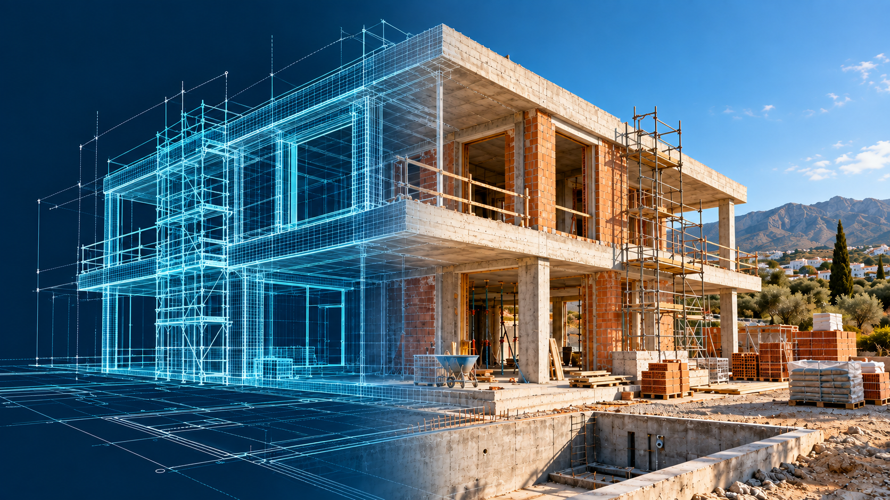
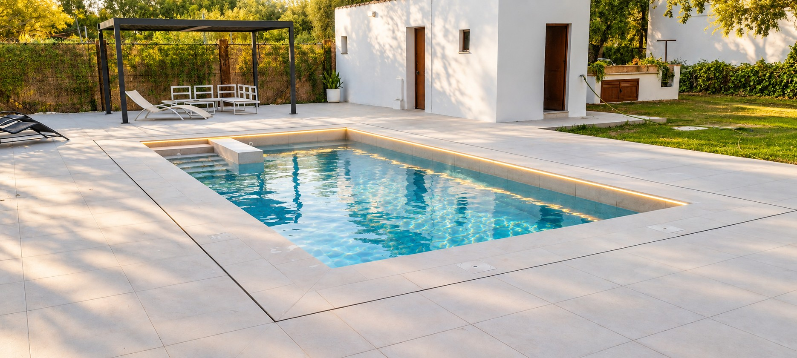

Reformas integrales
Revisamos el estado del espacio y definimos las actuaciones de albañilería, instalaciones y acabados. Concretamos contigo el alcance de la reforma para preparar un presupuesto detallado.
Consultar reformas integralesARCOS DE LA FRONTERA · CÁDIZ
Reformas integrales, albañilería y renovación de baños y cocinas. Distintos oficios, un mismo compromiso con tu obra.
Cuéntanos tu proyectoOCM Construcciones, ahora también en la web.

DEL PLANO A LA OBRA · IMAGEN CONCEPTUALOCM SERVICIOS
Una reforma, una nueva construcción o un trabajo concreto. El primer paso es entender qué necesitas.
Trabajamos desde Arcos de la Frontera para proyectos en la provincia de Cádiz. Estudiamos el espacio, definimos el alcance y preparamos un presupuesto para tu obra.
QUÉ PODEMOS HACER POR TI
Revisamos el estado del espacio y definimos las actuaciones de albañilería, instalaciones y acabados. Concretamos contigo el alcance de la reforma para preparar un presupuesto detallado.
Consultar reformas integralesRenovamos baños y cocinas con trabajos de albañilería, solados, alicatados e instalaciones. Estudiamos la distribución y los acabados según el espacio y lo que necesitas.
Consultar baños y cocinasRealizamos trabajos de albañilería para obras y reformas: preparación de soportes, tabiquería y actuaciones en el espacio existente. Valoramos cada trabajo según el estado de la obra.
Consultar albañileríaColocamos pavimentos y revestimientos cerámicos en suelos y paredes. Revisamos el soporte y acordamos los materiales, el formato y la distribución antes de empezar.
Consultar solados y alicatadosEstudiamos el origen de las filtraciones y el estado del soporte para valorar la impermeabilización. La solución depende de la zona afectada y del sistema adecuado para cada caso.
Consultar impermeabilizaciónPreparamos superficies y realizamos trabajos de pintura en interiores y exteriores. Revisamos el estado de paredes y techos para concretar las reparaciones y el acabado.
Consultar pinturaRealizamos trabajos de fontanería en obras y reformas, incluida la renovación de instalaciones de agua y desagües. Definimos las actuaciones necesarias según el estado y uso del espacio.
Consultar fontaneríaRealizamos trabajos de electricidad en obras y reformas. Revisamos las necesidades de iluminación y los puntos de uso para concretar las actuaciones y el alcance del trabajo.
Consultar electricidadCONSTRUCCIÓN Y EXTERIORES
Una selección de nuestra galería. Pulsa una fotografía para verla con más detalle.
LA IDENTIDAD DE SIEMPRE
OCM es el nombre con el que presentamos nuestro trabajo. OCM Servicios reúne en esta web nuestros servicios auxiliares de la construcción, obras y reformas.
Detrás de cada consulta hay una conversación directa: qué quieres hacer, dónde y qué necesitas resolver. Con esa información empezamos a preparar tu proyecto.
Hablemos de tu obra
TAMBIÉN HACEMOS PISCINAS
La construcción y reforma de piscinas tiene su propia web: OCM POOL. Descubre los acabados, equipamiento y galería de trabajos.
Descubre OCM POOLANTES DE EMPEZAR
Envíanos la localidad, el tipo de trabajo y unas fotos del espacio.
Revisamos la información y acordamos qué actuaciones hay que valorar.
Detallamos el trabajo presupuestado para que puedas decidir.
DUDAS HABITUALES
Partimos de Arcos de la Frontera y atendemos consultas para trabajos en la provincia de Cádiz. Dinos la ubicación para valorar tu proyecto.
La localidad, una explicación del trabajo, fotografías y medidas aproximadas si las tienes. A partir de ahí concretaremos la información necesaria.
Sí. Puedes conocer nuestra actividad de piscinas en OCM POOL · mrpool.es.
Cuéntanos lo que necesitas. Valoramos cada consulta según el alcance y la disponibilidad.
DE ARCOS, A LA PROVINCIA DE CÁDIZ
Envíanos la ubicación, unas fotografías y una explicación del trabajo.